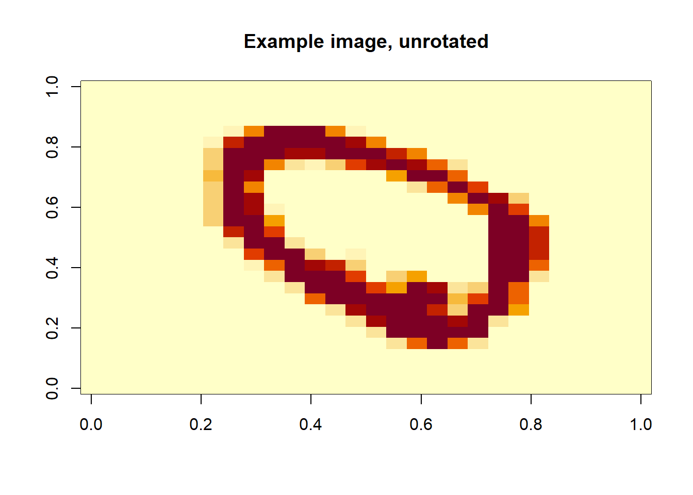

25.2 Multivariate Analysis of Variance
Multivariate Analysis of Variance (MANOVA) is an extension of the univariate Analysis of Variance (ANOVA) that allows researchers to examine multiple dependent variables simultaneously. Unlike ANOVA, which evaluates differences in means for a single dependent variable across groups, MANOVA assesses whether there are statistically significant differences among groups across two or more correlated dependent variables.
By considering multiple dependent variables at once, MANOVA accounts for interdependencies between them, reducing the likelihood of Type I errors that may arise from conducting multiple separate ANOVA tests. It is particularly useful in fields such as psychology, marketing, and social sciences, where multiple outcome measures are often interrelated.
This technique is commonly applied in experimental and observational studies where researchers seek to determine the impact of categorical independent variables on multiple continuous dependent variables.
25.2.1 One-Way MANOVA
One-way MANOVA extends the univariate one-way ANOVA to multiple dependent variables. It is used to compare treatment means across \(h\) different populations when the response consists of multiple correlated variables.
Let the populations be indexed by \(i = 1, 2, \dots, h\), and the observations within each population be indexed by \(j = 1, 2, \dots, n_i\). We assume:
Population 1: \(\mathbf{y}_{11}, \mathbf{y}_{12}, \dots, \mathbf{y}_{1n_1} \sim \text{i.i.d. } N_p (\boldsymbol{\mu}_1, \boldsymbol{\Sigma})\)
\(\vdots\)
Population \(h\): \(\mathbf{y}_{h1}, \mathbf{y}_{h2}, \dots, \mathbf{y}_{hn_h} \sim \text{i.i.d. } N_p (\boldsymbol{\mu}_h, \boldsymbol{\Sigma})\)
where:
\(\mathbf{y}_{ij}\) is a \(p\)-dimensional response vector for the \(j\)th observation in the \(i\)th group.
\(\boldsymbol{\mu}_i\) is the population mean vector for the \(i\)th group.
\(\boldsymbol{\Sigma}\) is the common covariance matrix across all groups.
Assumptions
- Independence: Observations within and across groups are independent.
- Multivariate Normality: Each population follows a \(p\)-variate normal distribution.
- Homogeneity of Covariance Matrices: The covariance matrix \(\boldsymbol{\Sigma}\) is the same for all groups.
For each group \(i\), we can compute:
Sample mean vector: \(\mathbf{\bar{y}}_i = \frac{1}{n_i} \sum_{j=1}^{n_i} \mathbf{y}_{ij}\)
Sample covariance matrix: \(\mathbf{S}_i = \frac{1}{n_i - 1} \sum_{j=1}^{n_i} (\mathbf{y}_{ij} - \mathbf{\bar{y}}_i)(\mathbf{y}_{ij} - \mathbf{\bar{y}}_i)'\)
Pooled covariance matrix: \[ \mathbf{S} = \frac{1}{\sum_{i=1}^{h} (n_i - 1)} \sum_{i=1}^{h} (n_i - 1) \mathbf{S}_i \]
25.2.1.1 Effects Model Formulation
Similar to the univariate one-way ANOVA, the effects model can be written as:
\[ \boldsymbol{\mu}_i = \boldsymbol{\mu} + \boldsymbol{\tau}_i \]
where:
\(\boldsymbol{\mu}_i\) is the mean vector for group \(i\).
\(\boldsymbol{\mu}\) is the overall mean effect.
\(\boldsymbol{\tau}_i\) is the treatment effect for group \(i\).
The observational model is:
\[ \mathbf{y}_{ij} = \boldsymbol{\mu} + \boldsymbol{\tau}_i + \boldsymbol{\epsilon}_{ij} \]
where \(\boldsymbol{\epsilon}_{ij} \sim N_p(\mathbf{0}, \boldsymbol{\Sigma})\) represents the residual variation.
Since the model is overparameterized, we impose the constraint:
\[ \sum_{i=1}^h n_i \boldsymbol{\tau}_i = \mathbf{0} \]
or equivalently, we may set \(\boldsymbol{\tau}_h = \mathbf{0}\).
Analogous to univariate ANOVA, the total variability is partitioned as:
\[ \sum_{i = 1}^h \sum_{j = 1}^{n_i} (\mathbf{y}_{ij} - \mathbf{\bar{y}})(\mathbf{y}_{ij} - \mathbf{\bar{y}})' = \sum_{i = 1}^h n_i (\mathbf{\bar{y}}_i - \mathbf{\bar{y}})(\mathbf{\bar{y}}_i - \mathbf{\bar{y}})' + \sum_{i=1}^h \sum_{j = 1}^{n_i} (\mathbf{y}_{ij} - \mathbf{\bar{y}}_i)(\mathbf{y}_{ij} - \mathbf{\bar{y}}_i)' \]
where:
LHS: Total corrected sums of squares and cross-products (SSCP) matrix.
RHS:
First term: Between-groups SSCP matrix (denoted \(\mathbf{H}\)).
Second term: Within-groups (residual) SSCP matrix (denoted \(\mathbf{E}\)).
The total within-group variation is:
\[ \mathbf{E} = (n_1 - 1)\mathbf{S}_1 + \dots + (n_h -1) \mathbf{S}_h = (\sum_{i=1}^h n_i - h) \mathbf{S} \]
| Source | SSCP | df |
|---|---|---|
| Treatment | \(\mathbf{H}\) | \(h -1\) |
| Residual (error) | \(\mathbf{E}\) | \(\sum_{i= 1}^h n_i - h\) |
| Total Corrected | \(\mathbf{H + E}\) | \(\sum_{i=1}^h n_i -1\) |
25.2.1.1.1 Hypothesis Testing
The null hypothesis states:
\[ H_0: \boldsymbol{\tau}_1 = \boldsymbol{\tau}_2 = \dots = \boldsymbol{\tau}_h = \mathbf{0} \]
which implies that all group mean vectors are equal.
To test \(H_0\), we assess the relative sizes of \(\mathbf{E}\) and \(\mathbf{H + E}\) using Wilks’ Lambda:
Wilks’ Lambda is defined as:
\[ \Lambda^* = \frac{|\mathbf{E}|}{|\mathbf{H + E}|} \]
Properties:
- In the univariate case, Wilks’ Lambda reduces to the F-statistic.
- The exact distribution of \(\Lambda^*\) is known in special cases.
- For large samples, we reject \(H_0\) if:
\[ -\left( \sum_{i=1}^h n_i - 1 - \frac{p+h}{2} \right) \log(\Lambda^*) > \chi^2_{(1-\alpha, p(h-1))} \]
# Load dataset
data(iris)
# Fit MANOVA model
manova_fit <-
manova(cbind(Sepal.Length, Sepal.Width, Petal.Length, Petal.Width) ~ Species,
data = iris)
# Summary of the MANOVA test
summary(manova_fit, test = "Wilks")
#> Df Wilks approx F num Df den Df Pr(>F)
#> Species 2 0.023439 199.15 8 288 < 2.2e-16 ***
#> Residuals 147
#> ---
#> Signif. codes: 0 '***' 0.001 '**' 0.01 '*' 0.05 '.' 0.1 ' ' 125.2.1.2 Testing General Hypotheses in MANOVA
We consider \(h\) different treatments, where the \(i\)-th treatment is applied to \(n_i\) subjects, each observed for \(p\) repeated measures. This results in a \(p\)-dimensional observation vector for each subject in a random sample from each of the \(h\) different treatment populations.
The general MANOVA model can be written as:
\[ \mathbf{y}_{ij} = \boldsymbol{\mu} + \boldsymbol{\tau}_i + \boldsymbol{\epsilon}_{ij}, \quad i = 1, \dots, h; \quad j = 1, \dots, n_i \]
Equivalently, in matrix notation:
\[ \mathbf{Y} = \mathbf{XB} + \boldsymbol{\epsilon} \]
where:
\(\mathbf{Y}_{(n \times p)}\) is the matrix of response variables.
\(\mathbf{X}_{(n \times h)}\) is the design matrix. - \(\mathbf{B}_{(h \times p)}\) contains the treatment effects.
\(\boldsymbol{\epsilon}_{(n \times p)}\) is the error matrix.
The response matrix:
\[ \mathbf{Y}_{(n \times p)} = \begin{bmatrix} \mathbf{y}_{11}' \\ \vdots \\ \mathbf{y}_{1n_1}' \\ \vdots \\ \mathbf{y}_{hn_h}' \end{bmatrix} \]
The coefficient matrix:
\[ \mathbf{B}_{(h \times p)} = \begin{bmatrix} \boldsymbol{\mu}' \\ \boldsymbol{\tau}_1' \\ \vdots \\ \boldsymbol{\tau}_{h-1}' \end{bmatrix} \]
The error matrix:
\[ \boldsymbol{\epsilon}_{(n \times p)} = \begin{bmatrix} \boldsymbol{\epsilon}_{11}' \\ \vdots \\ \boldsymbol{\epsilon}_{1n_1}' \\ \vdots \\ \boldsymbol{\epsilon}_{hn_h}' \end{bmatrix} \]
The design matrix \(\mathbf{X}\) encodes the treatment assignments:
\[ \mathbf{X}_{(n \times h)} = \begin{bmatrix} 1 & 1 & 0 & \dots & 0 \\ \vdots & \vdots & \vdots & & \vdots \\ 1 & 1 & 0 & \dots & 0 \\ \vdots & \vdots & \vdots & \dots & \vdots \\ 1 & 0 & 0 & \dots & 0 \\ \vdots & \vdots & \vdots & & \vdots \\ 1 & 0 & 0 & \dots & 0 \end{bmatrix} \]
25.2.1.2.1 Estimation
The least squares estimate of \(\mathbf{B}\) is given by:
\[ \hat{\mathbf{B}} = (\mathbf{X'X})^{-1} \mathbf{X'Y} \]
Since the rows of \(\mathbf{Y}\) are independent, we assume:
\[ \operatorname{Var}(\mathbf{Y}) = \mathbf{I}_n \otimes \boldsymbol{\Sigma} \]
where \(\otimes\) denotes the Kronecker product, resulting in an \(np \times np\) covariance matrix.
25.2.1.2.2 Hypothesis Testing
The general hypothesis in MANOVA can be written as:
\[ \begin{aligned} &H_0: \mathbf{LBM} = 0 \\ &H_a: \mathbf{LBM} \neq 0 \end{aligned} \]
where:
\(\mathbf{L}\) is a \((g \times h)\) matrix of full row rank (\(g \le h\)), specifying comparisons across groups.
\(\mathbf{M}\) is a \((p \times u)\) matrix of full column rank (\(u \le p\)), specifying comparisons across traits.
To evaluate the effect of treatments in the MANOVA framework, we compute the treatment corrected sums of squares and cross-product (SSCP) matrix:
\[ \mathbf{H} = \mathbf{M'Y'X(X'X)^{-1}L'[L(X'X)^{-1}L']^{-1}L(X'X)^{-1}X'YM} \]
If we are testing the null hypothesis:
\[ H_0: \mathbf{LBM} = \mathbf{D} \]
then the corresponding SSCP matrix is:
\[ \mathbf{H} = (\mathbf{\hat{LBM}} - \mathbf{D})'[\mathbf{X(X'X)^{-1}L}]^{-1}(\mathbf{\hat{LBM}} - \mathbf{D}) \]
Similarly, the residual (error) SSCP matrix is given by:
\[ \mathbf{E} = \mathbf{M'Y'[I - X(X'X)^{-1}X']Y M} \]
which can also be expressed as:
\[ \mathbf{E} = \mathbf{M'[Y'Y - \hat{B}'(X'X)^{-1} \hat{B}]M} \]
These matrices, \(\mathbf{H}\) and \(\mathbf{E}\), serve as the basis for assessing the relative treatment effect in a multivariate setting.
25.2.1.2.3 Test Statistics in MANOVA
To test whether treatment effects significantly impact the multivariate response, we examine the eigenvalues of \(\mathbf{HE}^{-1}\), leading to several common test statistics:
Wilks’ Lambda: \[ \Lambda^* = \frac{|\mathbf{E}|}{|\mathbf{H} + \mathbf{E}|} \] A smaller \(\Lambda^*\) indicates a greater difference among group mean vectors. The degrees of freedom depend on the ranks of \(\mathbf{L}, \mathbf{M},\) and \(\mathbf{X}\).
Lawley-Hotelling Trace: \[ U = \operatorname{tr}(\mathbf{HE}^{-1}) \] This statistic sums the eigenvalues of \(\mathbf{HE}^{-1}\), capturing the overall treatment effect.
Pillai’s Trace: \[ V = \operatorname{tr}(\mathbf{H}(\mathbf{H} + \mathbf{E})^{-1}) \] This test is known for its robustness against violations of MANOVA assumptions.
Roy’s Maximum Root: The largest eigenvalue of \(\mathbf{HE}^{-1}\). It focuses on the strongest treatment effect present in the data.
For large \(n\), under \(H_0\):
\[ -\left(n - 1 - \frac{p + h}{2} \right) \ln \Lambda^* \sim \chi^2_{p(h-1)} \]
In certain cases, specific values of \(p\) and \(h\) allow for an exact \(F\)-distribution under \(H_0\).
## One-Way MANOVA
library(car)
library(emmeans)
library(profileR)
library(tidyverse)
# Read in the data
gpagmat <- read.table("images/gpagmat.dat")
# Change the variable names
names(gpagmat) <- c("y1", "y2", "admit")
# Check the structure of the dataset
str(gpagmat)
#> 'data.frame': 85 obs. of 3 variables:
#> $ y1 : num 2.96 3.14 3.22 3.29 3.69 3.46 3.03 3.19 3.63 3.59 ...
#> $ y2 : int 596 473 482 527 505 693 626 663 447 588 ...
#> $ admit: int 1 1 1 1 1 1 1 1 1 1 ...
# Plot the data
gg <- ggplot(gpagmat, aes(x = y1, y = y2)) +
geom_text(aes(label = admit, col = as.character(admit))) +
scale_color_discrete(name = "Admission",
labels = c("Admit", "Do not admit", "Borderline")) +
scale_x_continuous(name = "GPA") +
scale_y_continuous(name = "GMAT")
# Fit a one-way MANOVA model
oneway_fit <- manova(cbind(y1, y2) ~ admit, data = gpagmat)
# MANOVA test using Wilks' Lambda
summary(oneway_fit, test = "Wilks")
#> Df Wilks approx F num Df den Df Pr(>F)
#> admit 1 0.6126 25.927 2 82 1.881e-09 ***
#> Residuals 83
#> ---
#> Signif. codes: 0 '***' 0.001 '**' 0.01 '*' 0.05 '.' 0.1 ' ' 1Since the Wilks’ Lambda test results in a small \(p\)-value, we reject the null hypothesis of equal multivariate mean vectors among the three admission groups.
Repeated Measures MANOVA
# Create dataset for repeated measures example
stress <- data.frame(
subject = 1:8,
begin = c(3, 2, 5, 6, 1, 5, 1, 5),
middle = c(3, 4, 3, 7, 4, 7, 1, 2),
final = c(6, 7, 4, 7, 6, 7, 3, 5)
)Choosing the Correct Model
If time (with three levels) is treated as an independent variable, we use univariate ANOVA (which requires the sphericity assumption, meaning the variances of all differences must be equal).
If each time point is treated as a separate variable, we use MANOVA (which does not require the sphericity assumption).
# Fit the MANOVA model for repeated measures
stress_mod <- lm(cbind(begin, middle, final) ~ 1, data = stress)
# Define the within-subject factor
idata <- data.frame(time = factor(
c("begin", "middle", "final"),
levels = c("begin", "middle", "final")
))
# Perform repeated measures MANOVA
repeat_fit <- Anova(
stress_mod,
idata = idata,
idesign = ~ time,
icontrasts = "contr.poly"
)
# Summarize results
summary(repeat_fit)
#>
#> Type III Repeated Measures MANOVA Tests:
#>
#> ------------------------------------------
#>
#> Term: (Intercept)
#>
#> Response transformation matrix:
#> (Intercept)
#> begin 1
#> middle 1
#> final 1
#>
#> Sum of squares and products for the hypothesis:
#> (Intercept)
#> (Intercept) 1352
#>
#> Multivariate Tests: (Intercept)
#> Df test stat approx F num Df den Df Pr(>F)
#> Pillai 1 0.896552 60.66667 1 7 0.00010808 ***
#> Wilks 1 0.103448 60.66667 1 7 0.00010808 ***
#> Hotelling-Lawley 1 8.666667 60.66667 1 7 0.00010808 ***
#> Roy 1 8.666667 60.66667 1 7 0.00010808 ***
#> ---
#> Signif. codes: 0 '***' 0.001 '**' 0.01 '*' 0.05 '.' 0.1 ' ' 1
#>
#> ------------------------------------------
#>
#> Term: time
#>
#> Response transformation matrix:
#> time.L time.Q
#> begin -7.071068e-01 0.4082483
#> middle -7.850462e-17 -0.8164966
#> final 7.071068e-01 0.4082483
#>
#> Sum of squares and products for the hypothesis:
#> time.L time.Q
#> time.L 18.062500 6.747781
#> time.Q 6.747781 2.520833
#>
#> Multivariate Tests: time
#> Df test stat approx F num Df den Df Pr(>F)
#> Pillai 1 0.7080717 7.276498 2 6 0.024879 *
#> Wilks 1 0.2919283 7.276498 2 6 0.024879 *
#> Hotelling-Lawley 1 2.4254992 7.276498 2 6 0.024879 *
#> Roy 1 2.4254992 7.276498 2 6 0.024879 *
#> ---
#> Signif. codes: 0 '***' 0.001 '**' 0.01 '*' 0.05 '.' 0.1 ' ' 1
#>
#> Univariate Type III Repeated-Measures ANOVA Assuming Sphericity
#>
#> Sum Sq num Df Error SS den Df F value Pr(>F)
#> (Intercept) 450.67 1 52.00 7 60.6667 0.0001081 ***
#> time 20.58 2 24.75 14 5.8215 0.0144578 *
#> ---
#> Signif. codes: 0 '***' 0.001 '**' 0.01 '*' 0.05 '.' 0.1 ' ' 1
#>
#>
#> Mauchly Tests for Sphericity
#>
#> Test statistic p-value
#> time 0.7085 0.35565
#>
#>
#> Greenhouse-Geisser and Huynh-Feldt Corrections
#> for Departure from Sphericity
#>
#> GG eps Pr(>F[GG])
#> time 0.77429 0.02439 *
#> ---
#> Signif. codes: 0 '***' 0.001 '**' 0.01 '*' 0.05 '.' 0.1 ' ' 1
#>
#> HF eps Pr(>F[HF])
#> time 0.9528433 0.01611634The results indicate that we cannot reject the null hypothesis of sphericity, meaning that univariate ANOVA is also appropriate. The linear time effect is significant, but the quadratic time effect is not.
Polynomial Contrasts for Time Effects
To further explore the effect of time, we examine polynomial contrasts.
# Check the reference for the marginal means
ref_grid(stress_mod, mult.name = "time")
#> 'emmGrid' object with variables:
#> 1 = 1
#> time = multivariate response levels: begin, middle, final
# Compute marginal means for time levels
contr_means <- emmeans(stress_mod, ~ time, mult.name = "time")
# Test for polynomial trends
contrast(contr_means, method = "poly")
#> contrast estimate SE df t.ratio p.value
#> linear 2.12 0.766 7 2.773 0.0276
#> quadratic 1.38 0.944 7 1.457 0.1885The results confirm that there is a significant linear trend over time but no quadratic trend.
MANOVA for Drug Treatments
We now analyze a multivariate response for different drug treatments.
# Read in the dataset
heart <- read.table("images/heart.dat")
# Assign variable names
names(heart) <- c("drug", "y1", "y2", "y3", "y4")
# Create a subject ID nested within drug groups
heart <- heart %>%
group_by(drug) %>%
mutate(subject = row_number()) %>%
ungroup()
# Check dataset structure
str(heart)
#> tibble [24 × 6] (S3: tbl_df/tbl/data.frame)
#> $ drug : chr [1:24] "ax23" "ax23" "ax23" "ax23" ...
#> $ y1 : int [1:24] 72 78 71 72 66 74 62 69 85 82 ...
#> $ y2 : int [1:24] 86 83 82 83 79 83 73 75 86 86 ...
#> $ y3 : int [1:24] 81 88 81 83 77 84 78 76 83 80 ...
#> $ y4 : int [1:24] 77 82 75 69 66 77 70 70 80 84 ...
#> $ subject: int [1:24] 1 2 3 4 5 6 7 8 1 2 ...
# Create means summary for a profile plot
heart_means <- heart %>%
group_by(drug) %>%
summarize_at(vars(starts_with("y")), mean) %>%
ungroup() %>%
pivot_longer(-drug, names_to = "time", values_to = "mean") %>%
mutate(time = as.numeric(as.factor(time)))
# Generate the profile plot
gg_profile <- ggplot(heart_means, aes(x = time, y = mean)) +
geom_line(aes(col = drug)) +
geom_point(aes(col = drug)) +
ggtitle("Profile Plot") +
scale_y_continuous(name = "Response") +
scale_x_discrete(name = "Time")
Figure 25.2: Profile Plot
# Fit the MANOVA model
heart_mod <- lm(cbind(y1, y2, y3, y4) ~ drug, data = heart)
# Perform MANOVA test
man_fit <- car::Anova(heart_mod)
# Summarize results
summary(man_fit)
#>
#> Type II MANOVA Tests:
#>
#> Sum of squares and products for error:
#> y1 y2 y3 y4
#> y1 641.00 601.750 535.250 426.00
#> y2 601.75 823.875 615.500 534.25
#> y3 535.25 615.500 655.875 555.25
#> y4 426.00 534.250 555.250 674.50
#>
#> ------------------------------------------
#>
#> Term: drug
#>
#> Sum of squares and products for the hypothesis:
#> y1 y2 y3 y4
#> y1 567.00 335.2500 42.7500 387.0
#> y2 335.25 569.0833 404.5417 367.5
#> y3 42.75 404.5417 391.0833 171.0
#> y4 387.00 367.5000 171.0000 316.0
#>
#> Multivariate Tests: drug
#> Df test stat approx F num Df den Df Pr(>F)
#> Pillai 2 1.283456 8.508082 8 38 1.5010e-06 ***
#> Wilks 2 0.079007 11.509581 8 36 6.3081e-08 ***
#> Hotelling-Lawley 2 7.069384 15.022441 8 34 3.9048e-09 ***
#> Roy 2 6.346509 30.145916 4 19 5.4493e-08 ***
#> ---
#> Signif. codes: 0 '***' 0.001 '**' 0.01 '*' 0.05 '.' 0.1 ' ' 1Since we obtain a small \(p\)-value, we reject the null hypothesis of no difference in means between the treatments.
Contrasts Between Treatment Groups
To further investigate group differences, we define contrast matrices.
# Convert drug variable to a factor
heart$drug <- factor(heart$drug)
# Define contrast matrix L
L <- matrix(c(0, 2,
1, -1,-1, -1), nrow = 3, byrow = TRUE)
colnames(L) <- c("bww9:ctrl", "ax23:rest")
rownames(L) <- unique(heart$drug)
# Assign contrasts
contrasts(heart$drug) <- L
contrasts(heart$drug)
#> bww9:ctrl ax23:rest
#> ax23 0 2
#> bww9 1 -1
#> ctrl -1 -1Hypothesis Testing with Contrast Matrices
Instead of setting contrasts in heart$drug, we use a contrast matrix \(\mathbf{M}\)
# Define contrast matrix M for further testing
M <- matrix(c(1, -1, 0, 0,
0, 1, -1, 0,
0, 0, 1, -1), nrow = 4)
# Update model for contrast testing
heart_mod2 <- update(heart_mod)
# Display model coefficients
coef(heart_mod2)
#> y1 y2 y3 y4
#> (Intercept) 75.00 78.9583333 77.041667 74.75
#> drugbww9:ctrl 4.50 5.8125000 3.562500 4.25
#> drugax23:rest -2.25 0.7708333 1.979167 -0.75Comparing Drug bww9 vs Control
bww9vctrl <-
car::linearHypothesis(heart_mod2,
hypothesis.matrix = c(0, 1, 0),
P = M)
bww9vctrl
#>
#> Response transformation matrix:
#> [,1] [,2] [,3]
#> y1 1 0 0
#> y2 -1 1 0
#> y3 0 -1 1
#> y4 0 0 -1
#>
#> Sum of squares and products for the hypothesis:
#> [,1] [,2] [,3]
#> [1,] 27.5625 -47.25 14.4375
#> [2,] -47.2500 81.00 -24.7500
#> [3,] 14.4375 -24.75 7.5625
#>
#> Sum of squares and products for error:
#> [,1] [,2] [,3]
#> [1,] 261.375 -141.875 28.000
#> [2,] -141.875 248.750 -19.375
#> [3,] 28.000 -19.375 219.875
#>
#> Multivariate Tests:
#> Df test stat approx F num Df den Df Pr(>F)
#> Pillai 1 0.2564306 2.184141 3 19 0.1233
#> Wilks 1 0.7435694 2.184141 3 19 0.1233
#> Hotelling-Lawley 1 0.3448644 2.184141 3 19 0.1233
#> Roy 1 0.3448644 2.184141 3 19 0.1233
bww9vctrl <-
car::linearHypothesis(heart_mod,
hypothesis.matrix = c(0, 1,-1),
P = M)
bww9vctrl
#>
#> Response transformation matrix:
#> [,1] [,2] [,3]
#> y1 1 0 0
#> y2 -1 1 0
#> y3 0 -1 1
#> y4 0 0 -1
#>
#> Sum of squares and products for the hypothesis:
#> [,1] [,2] [,3]
#> [1,] 27.5625 -47.25 14.4375
#> [2,] -47.2500 81.00 -24.7500
#> [3,] 14.4375 -24.75 7.5625
#>
#> Sum of squares and products for error:
#> [,1] [,2] [,3]
#> [1,] 261.375 -141.875 28.000
#> [2,] -141.875 248.750 -19.375
#> [3,] 28.000 -19.375 219.875
#>
#> Multivariate Tests:
#> Df test stat approx F num Df den Df Pr(>F)
#> Pillai 1 0.2564306 2.184141 3 19 0.1233
#> Wilks 1 0.7435694 2.184141 3 19 0.1233
#> Hotelling-Lawley 1 0.3448644 2.184141 3 19 0.1233
#> Roy 1 0.3448644 2.184141 3 19 0.1233Since the \(p\)-value is not significant, we conclude that there is no significant difference between the control and bww9 drug treatment.
Comparing Drug ax23 vs Rest
axx23vrest <-
car::linearHypothesis(heart_mod2,
hypothesis.matrix = c(0, 0, 1),
P = M)
axx23vrest
#>
#> Response transformation matrix:
#> [,1] [,2] [,3]
#> y1 1 0 0
#> y2 -1 1 0
#> y3 0 -1 1
#> y4 0 0 -1
#>
#> Sum of squares and products for the hypothesis:
#> [,1] [,2] [,3]
#> [1,] 438.0208 175.20833 -395.7292
#> [2,] 175.2083 70.08333 -158.2917
#> [3,] -395.7292 -158.29167 357.5208
#>
#> Sum of squares and products for error:
#> [,1] [,2] [,3]
#> [1,] 261.375 -141.875 28.000
#> [2,] -141.875 248.750 -19.375
#> [3,] 28.000 -19.375 219.875
#>
#> Multivariate Tests:
#> Df test stat approx F num Df den Df Pr(>F)
#> Pillai 1 0.855364 37.45483 3 19 3.5484e-08 ***
#> Wilks 1 0.144636 37.45483 3 19 3.5484e-08 ***
#> Hotelling-Lawley 1 5.913921 37.45483 3 19 3.5484e-08 ***
#> Roy 1 5.913921 37.45483 3 19 3.5484e-08 ***
#> ---
#> Signif. codes: 0 '***' 0.001 '**' 0.01 '*' 0.05 '.' 0.1 ' ' 1
axx23vrest <-
car::linearHypothesis(heart_mod,
hypothesis.matrix = c(2,-1, 1),
P = M)
axx23vrest
#>
#> Response transformation matrix:
#> [,1] [,2] [,3]
#> y1 1 0 0
#> y2 -1 1 0
#> y3 0 -1 1
#> y4 0 0 -1
#>
#> Sum of squares and products for the hypothesis:
#> [,1] [,2] [,3]
#> [1,] 402.5208 127.41667 -390.9375
#> [2,] 127.4167 40.33333 -123.7500
#> [3,] -390.9375 -123.75000 379.6875
#>
#> Sum of squares and products for error:
#> [,1] [,2] [,3]
#> [1,] 261.375 -141.875 28.000
#> [2,] -141.875 248.750 -19.375
#> [3,] 28.000 -19.375 219.875
#>
#> Multivariate Tests:
#> Df test stat approx F num Df den Df Pr(>F)
#> Pillai 1 0.842450 33.86563 3 19 7.9422e-08 ***
#> Wilks 1 0.157550 33.86563 3 19 7.9422e-08 ***
#> Hotelling-Lawley 1 5.347205 33.86563 3 19 7.9422e-08 ***
#> Roy 1 5.347205 33.86563 3 19 7.9422e-08 ***
#> ---
#> Signif. codes: 0 '***' 0.001 '**' 0.01 '*' 0.05 '.' 0.1 ' ' 1Since we obtain a significant \(p\)-value, we conclude that the ax23 drug treatment significantly differs from the rest of the treatments.
25.2.2 Profile Analysis
Profile analysis is a multivariate extension of repeated measures ANOVA used to examine similarities between treatment effects in longitudinal data. The null hypothesis states that all treatments have the same average effect:
\[ H_0: \mu_1 = \mu_2 = \dots = \mu_h \]
which is equivalent to testing:
\[ H_0: \tau_1 = \tau_2 = \dots = \tau_h \]
This analysis helps determine the exact nature of similarities and differences between treatments by sequentially testing the following hypotheses:
- Are the profiles parallel? No interaction between treatment and time.
- Are the profiles coincidental? Identical profiles across treatments.
- Are the profiles horizontal? No differences across any time points.
If the parallelism assumption is rejected, we can further investigate:
Differences among groups at specific time points.
Differences among time points within a particular group.
Differences within subsets of time points across groups.
Example: Profile Analysis Setup
Consider an example with:
4 time points (\(p = 4\))
3 treatments (\(h = 3\))
We analyze whether the profiles for each treatment group are identical except for a mean shift (i.e., they are parallel).
25.2.2.1 Parallel Profile Hypothesis
We test whether the differences in treatment means remain constant across time:
\[ \begin{aligned} H_0: \mu_{11} - \mu_{21} &= \mu_{12} - \mu_{22} = \dots = \mu_{1t} - \mu_{2t} \\ \mu_{11} - \mu_{31} &= \mu_{12} - \mu_{32} = \dots = \mu_{1t} - \mu_{3t} \\ &\vdots \end{aligned} \]
for \(h-1\) equations. Equivalently, in matrix form:
\[ H_0: \mathbf{LBM} = 0 \]
where the cell means parameterization of \(\mathbf{B}\) is:
\[ \mathbf{LBM} = \left[ \begin{array} {ccc} 1 & -1 & 0 \\ 1 & 0 & -1 \end{array} \right] \left[ \begin{array} {ccc} \mu_{11} & \dots & \mu_{14} \\ \mu_{21} & \dots & \mu_{24} \\ \mu_{31} & \dots & \mu_{34} \end{array} \right] \left[ \begin{array} {ccc} 1 & 1 & 1 \\ -1 & 0 & 0 \\ 0 & -1 & 0 \\ 0 & 0 & -1 \end{array} \right] = \mathbf{0} \]
where:
The first matrix compares treatments at each time point.
The second matrix contains the mean responses for each treatment across time.
The third matrix compares time points within each treatment.
The first multiplication, \(\mathbf{LB}\), results in:
\[ \left[ \begin{array} {cccc} \mu_{11} - \mu_{21} & \mu_{12} - \mu_{22} & \mu_{13} - \mu_{23} & \mu_{14} - \mu_{24}\\ \mu_{11} - \mu_{31} & \mu_{12} - \mu_{32} & \mu_{13} - \mu_{33} & \mu_{14} - \mu_{34} \end{array} \right] \]
This represents differences in treatment means at each time point.
Multiplying by \(\mathbf{M}\) compares these differences across time:
\[ \left[ \begin{array} {ccc} (\mu_{11} - \mu_{21}) - (\mu_{12} - \mu_{22}) & (\mu_{11} - \mu_{21}) - (\mu_{13} - \mu_{23}) & (\mu_{11} - \mu_{21}) - (\mu_{14} - \mu_{24}) \\ (\mu_{11} - \mu_{31}) - (\mu_{12} - \mu_{32}) & (\mu_{11} - \mu_{31}) - (\mu_{13} - \mu_{33}) & (\mu_{11} - \mu_{31}) - (\mu_{14} - \mu_{34}) \end{array} \right] \]
This matrix captures the changes in treatment differences over time.
Instead of using the cell means parameterization, we can express the model in terms of effects:
\[ \mathbf{LBM} = \left[ \begin{array} {cccc} 0 & 1 & -1 & 0 \\ 0 & 1 & 0 & -1 \end{array} \right] \left[ \begin{array} {c} \mu' \\ \tau'_1 \\ \tau_2' \\ \tau_3' \end{array} \right] \left[ \begin{array} {ccc} 1 & 1 & 1 \\ -1 & 0 & 0 \\ 0 & -1 & 0 \\ 0 & 0 & -1 \end{array} \right] = \mathbf{0} \]
where:
The first matrix compares treatment effects.
The second matrix contains overall mean and treatment effects.
The third matrix compares time points within each treatment.
In both parameterizations:
\(\operatorname{rank}(\mathbf{L}) = h-1\)
\(\operatorname{rank}(\mathbf{M}) = p-1\)
indicating that we are testing for differences across treatments (\(\mathbf{L}\)) and time points (\(\mathbf{M}\)).
Different choices of \(\mathbf{L}\) and \(\mathbf{M}\) still lead to the same hypothesis:
\[ \mathbf{L} = \left[ \begin{array} {cccc} 0 & 1 & 0 & -1 \\ 0 & 0 & 1 & -1 \end{array} \right] \]
\[ \mathbf{M} = \left[ \begin{array} {ccc} 1 & 0 & 0 \\ -1 & 1 & 0 \\ 0 & -1 & 1 \\ 0 & 0 & -1 \end{array} \right] \]
This choice yields the same profile comparison structure.
25.2.2.2 Coincidental Profiles
Once we establish that the profiles are parallel (i.e., we fail to reject the parallel profile test), we next ask:
Are the profiles identical?
If the sums of the components of \(\boldsymbol{\mu}_i\) are equal across all treatments, then the profiles are coincidental (i.e., identical across groups).
Hypothesis for Coincidental Profiles
\[ H_0: \mathbf{1'}_p \boldsymbol{\mu}_1 = \mathbf{1'}_p \boldsymbol{\mu}_2 = \dots = \mathbf{1'}_p \boldsymbol{\mu}_h \]
Equivalently, in matrix notation:
\[ H_0: \mathbf{LBM} = \mathbf{0} \]
where, under the cell means parameterization:
\[ \mathbf{L} = \begin{bmatrix} 1 & 0 & -1 \\ 0 & 1 & -1 \end{bmatrix} \]
and
\[ \mathbf{M} = \begin{bmatrix} 1 & 1 & 1 & 1 \end{bmatrix}' \]
Multiplying \(\mathbf{LBM}\) yields:
\[ \begin{bmatrix} (\mu_{11} + \mu_{12} + \mu_{13} + \mu_{14}) - (\mu_{31} + \mu_{32} + \mu_{33} + \mu_{34}) \\ (\mu_{21} + \mu_{22} + \mu_{23} + \mu_{24}) - (\mu_{31} + \mu_{32} + \mu_{33} + \mu_{34}) \end{bmatrix} = \begin{bmatrix} 0 \\ 0 \end{bmatrix} \]
Thus, rejecting this hypothesis suggests that the treatments do not have identical effects over time.
As in previous cases, different choices of \(\mathbf{L}\) and \(\mathbf{M}\) can yield the same result.
25.2.2.3 Horizontal Profiles
If we fail to reject the null hypothesis that all \(h\) profiles are the same (i.e., we confirm parallel and coincidental profiles), we then ask:
Are all elements of the common profile equal across time?
This question tests whether the profiles are horizontal, meaning no differences between any time points.
Hypothesis for Horizontal Profiles
\[ H_0: \mathbf{LBM} = \mathbf{0} \]
where
\[ \mathbf{L} = \begin{bmatrix} 1 & 0 & 0 \end{bmatrix} \]
and
\[ \mathbf{M} = \begin{bmatrix} 1 & 0 & 0 \\ -1 & 1 & 0 \\ 0 & -1 & 1 \\ 0 & 0 & -1 \end{bmatrix} \]
Multiplication yields:
\[ \begin{bmatrix} (\mu_{11} - \mu_{12}) & (\mu_{12} - \mu_{13}) & (\mu_{13} - \mu_{14}) \end{bmatrix} = \begin{bmatrix} 0 & 0 & 0 \end{bmatrix} \]
Thus, rejecting this hypothesis suggests that at least one time point differs significantly from the others in the common profile.
25.2.2.4 Summary of Profile Tests
If we fail to reject all three hypotheses, we conclude that:
There are no significant differences between treatments.
There are no significant differences between time points.
The three profile tests correspond to well-known univariate ANOVA components:
| Test | Equivalent test for |
|---|---|
| Parallel profiles | Interaction effect (treatment × time) |
| Coincidental profiles | Main effect of treatment (between-subjects factor) |
| Horizontal profiles | Main effect of time (repeated measures factor) |
# Profile analysis for heart dataset
profile_fit <- pbg(
data = as.matrix(heart[, 2:5]), # Response variables
group = as.matrix(heart[, 1]), # Treatment group
original.names = TRUE, # Keep original variable names
profile.plot = FALSE # Disable automatic plotting
)
# Summary of profile analysis results
summary(profile_fit)
#> Call:
#> pbg(data = as.matrix(heart[, 2:5]), group = as.matrix(heart[,
#> 1]), original.names = TRUE, profile.plot = FALSE)
#>
#> Hypothesis Tests:
#> $`Ho: Profiles are parallel`
#> Multivariate.Test Statistic Approx.F num.df den.df p.value
#> 1 Wilks 0.1102861 12.737599 6 38 7.891497e-08
#> 2 Pillai 1.0891707 7.972007 6 40 1.092397e-05
#> 3 Hotelling-Lawley 6.2587852 18.776356 6 36 9.258571e-10
#> 4 Roy 5.9550887 39.700592 3 20 1.302458e-08
#>
#> $`Ho: Profiles have equal levels`
#> Df Sum Sq Mean Sq F value Pr(>F)
#> group 2 328.7 164.35 5.918 0.00915 **
#> Residuals 21 583.2 27.77
#> ---
#> Signif. codes: 0 '***' 0.001 '**' 0.01 '*' 0.05 '.' 0.1 ' ' 1
#>
#> $`Ho: Profiles are flat`
#> F df1 df2 p-value
#> 1 14.30928 3 19 4.096803e-05